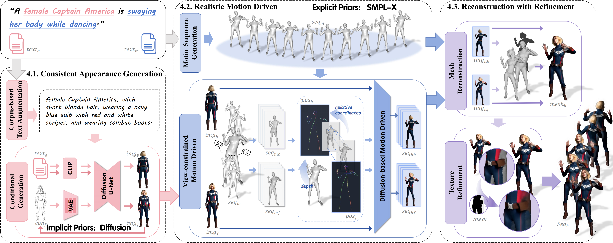
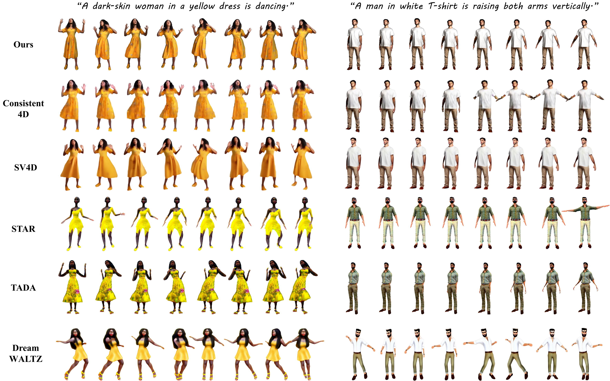

Abstract
High-quality dynamic 3D human sequences are essential for immersive applications in film, VR gaming, and remote conferencing. However, generating realistic 3D humans presents significant challenges due to complex spatial and temporal variations. To address these challenges, we propose HumanMP, a framework for text-driven dynamic 3D human sequence generation that ensures lifelike and consistent outputs. To achieve natural motion, we employ diffusion priors in the 2D domain to guide multi-view motion generation. To mitigate "Janus" artifacts caused by viewpoint inconsistencies, we incorporate SMPL-X to control multi-view motion generation and maintain pose consistency across views. Additionally, a texture enhancement strategy is applied to improve the visual quality of each frame. Experimental results demonstrate that HumanMP achieves superior efficiency and quality, with outputs that can be directly exported as explicit 3D representations, making it highly suitable for precise interactive applications.
Overview
We propose HumanMP, a multi-prior framework for text-driven 3D human sequence generation, ensuring realistic, consistent results. It uses 2D diffusion priors for natural multi-view motion and SMPL-X to fix "Janus" artifacts and maintain pose consistency. HumanMP includes three modules: appearance generation, motion driving with SMPL-X constraints, and reconstruction with texture refinement, producing high-quality dynamic 3D human sequences with natural motion.
Results and Comparison
Comparison of dynamic sequences.
Dynamic sequences.